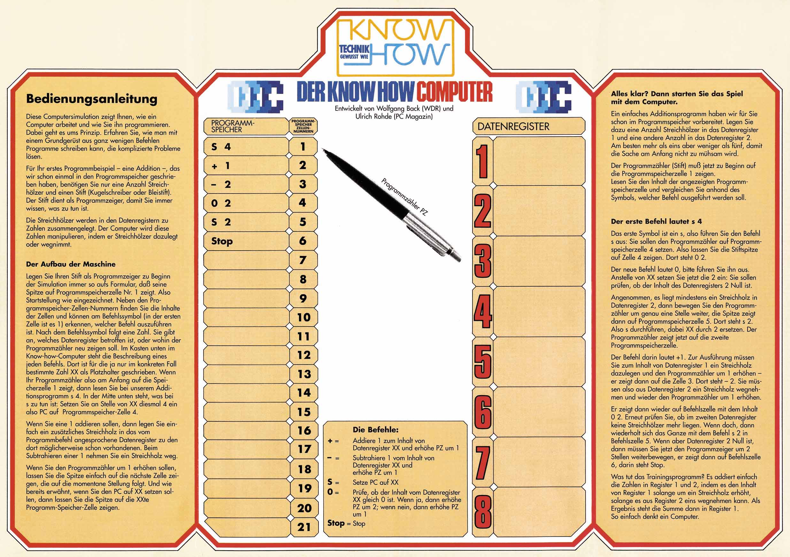

Les symptômes d’une crise planétaire qui va s’accélérant sont manifestes. On en a de tous côtés cherché le pourquoi. J’avance pour ma part l’explication suivante : la crise s’enracine dans l’échec de l’entreprise moderne, à savoir la substitution de la machine à l’homme. Le grand projet s’est métamorphosé en un implacable procès d’asservissement du producteur et d’intoxication du consommateur.
La relation de l’homme à l’outil est devenue une relation de l’outil à l’homme. Ici il faut savoir reconnaître l’échec. Cela fait une centaine d’années que nous essayons de faire travailler la machine pour l’homme et d’éduquer l’homme à servir la machine. On s’aperçoit maintenant que la machine ne « marche » pas, que l’homme ne saurait se conformer à ses exigences, se faire à vie son serviteur. Durant un siècle, l’humanité s’est livrée à une expérience fondée sur l’hypothèse suivante : l’outil peut remplacer l’esclave. Or il est manifeste qu’employé à de tels desseins, c’est l’outil qui de l’homme fait son esclave. La dictature du prolétariat et la civilisation des loisirs sont deux variantes politiques de la même domination par un outillage industriel en constante expansion. L’échec de cette grande aventure fait conclure à la fausseté de l’hypothèse.
La solution de la crise exige une radicale volte-face : ce n’est qu’en renversant la structure profonde qui règle le rapport de l’homme à l’outil que nous pourrons nous donner des outils justes. L’outil juste répond à trois exigences : il est générateur d’efficience sans dégrader l’autonomie personnelle, il ne suscite ni esclaves ni maîtres, il élargit le rayon d’action personnel. L’homme a besoin d’un outil avec lequel travailler, non d’un outillage qui travaille à sa place. Il a besoin d’une technologie qui tire le meilleur parti de l’énergie et de l’imagination personnelles, non d’une technologie qui l’asservisse et le programme.
Ivan Illich - La convivialité (1973)
-> Un ordinateur est-il complexe ou compliqué ?

5 Instructions :
+ [reg] : ajoute 1 au registre [reg]
- [reg] : soustrait 1 au registre [reg]
J [ligne] : saute à la ligne de code [ligne]
0 [reg] : si la valeur dans le registre [reg] est 0, saute une ligne de code et continue. Sinon, ne fait rien et passe à la ligne suivante.
stop : fin du programme-> quelles fonctions peut-on programmer avec le WDR Papiercomputer ?
-> Comment des applications d’une complexité bien plus élevée emergent-elles d’une unité de calcul aussi simple ?
Refs
-> Un fichier est un nombre
-> Editeur hexadécimal en ligne : https://hexed.it/
Écouter un fichier texte :
cat /var/log/kern.log | aplay -c2 -r 4000 -f MU_LAWÉcouter le traffic réseau :
sudo tcpdump -vvv | aplay -c2 -r 2000 -f FLOAT_LEÉcouter une image :
File -> Import -> Raw DataU-LawLittle-endian1 ChannelImportLui appliquer des effets audios :
Effect -> Reverb, pius appliquer l’effetFile -> Export -> Export audioOther uncompressed files:
RAW (header-less)U-Law.bmp-> Si on applique un effet sur la fin ou le début de l’image, l’export est une image inutilisable … pourquoi ?
-> Le format d’un fichier est arbitraire et décidé par les développeurs de l’application vouée à lire ce fichier.
Pour faire du data-bending sur un GIF animé :
1.1 1 1Firefox corrompu : https://faultlore.com/glitch/
Code binaire de Firefox :
xxd /snap/bin/firefox | lessRefs
-> Le code c’est l’interface de programmation de l’ordinateur.
-> Code ouvert (open source), VS code fermé (cf code binaire de Firefox VS code source de Firefox)
le World Wide Web - www Le premier “navigateur Internet” implémenté par Tim Berners-Lee, 1990
-> Ouvrir la “developer console” sur son navigateur : Firefox ou Chrome : ctrl + shift + c / Cmd + Option + c sur mac
Comment downloader du contenu sur instagram :
<img> correspondant.srcComment lire les articles de certains journaux sans avoir à s’abonner
Extensions Chrome :
Rendre des pages web plus intéressantes en executant du code directement dans la console :
shake('div', 100, 1, 0.05, false))